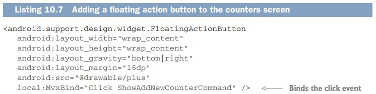

- Recycler views
- Floating action buttons
- Menu items
Floating action buttons란 무엇인가?
이제는 FAB를 추가할 차례다. 이 기능은 구글의 material design standard의 일부로 안드로이드 support 라이브러리에서 이용 가능하다. counters_view의 frame layout의 코드는 다음과 같다.

Click event와 ShowAddNewCountercommand가 bind되어 있는 것을 확인하였다. 여기 까지가 master counters view에서 해야 할 모든 것이다.